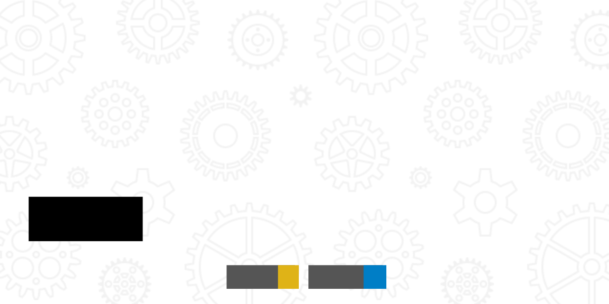

Quick Scenario:
Imagine working in a fast-paced environment where deadlines are tight, and collaboration between developers is crucial. You might have inherited someone else’s button component—one that doesn’t have clear type definitions or flexibility for different contexts. You struggle to understand how it works and spend more time fixing UI inconsistency and bugs than writing new features.
Why Read This Blog?
In this article, we’ll break down a common UI element, a
Button, in a step-by-step manner,
using TypeScript to demonstrate how type safety can save time and
headaches in the long run. By the end of this blog, you’ll know how
to:
- Set up type-safe React component using TypeScript.
- Ensure that your component is flexible, yet constrained within defined parameters.
-
Build a scalable and maintainable
Buttoncomponent that can be reused across projects.
We’ll be using the Button component
to demonstrate these concepts. By the end, you’ll be equipped with
hands-on knowledge of how to structure your React components in a
type-safe way while maintaining style consistency using
styled-components.
Why TypeScript for ReactJS Components?
- Type Safety: TypeScript allows you to define strict types for your component props. This means fewer bugs caused by passing incorrect types to your components.
- Better Developer Experience: Tools like VSCode provide autocomplete and inline documentation, thanks to TypeScript.
- Code Maintainability: TypeScript helps keep your components predictable, improving team collaboration and long-term project health.
Let’s jump into building a
Button component with TypeScript and
styled-components.
Step 1: TypeScript Interface Basics
We start with defining the props our Button component will accept. TypeScript allows us to describe the structure of these props using an interface.
interface ButtonProps {
children: ReactNode;
variant?: 'primary' | 'secondary';
size?: 'small' | 'medium' | 'large';
onClick?: () => void;
}- ReactNode: A TypeScript type that can represent anything React can render (strings, numbers, JSX, etc.).
-
Optional props: The question mark (
?) makesvariant,size, andonClickoptional. -
Union types:
'primary' | 'secondary'lets us limitvariantto specific values.
Step 2: Extending Built-in Types
We can extend existing HTML attributes (like button-related attributes) using TypeScript’s utility types.
interface ButtonProps extends HTMLAttributes<HTMLButtonElement> {
variant?: 'primary' | 'secondary';
}-
extendskeyword: This helps us reuse existing types and extend them with our custom ones. -
HTMLAttributes<HTMLButtonElement>: This ensures our Button component behaves like a native<button>element.
Step 3: Using Utility Types to Modify Props
What if we want the size prop to be
required in our styled button? We can use TypeScript’s utility types
like Omit to customize how the props
behave.
interface StyledButtonProps extends Omit<ButtonProps, 'size'> {
size: 'small' | 'medium' | 'large';
}- Omit: It's a TypeScript utility type that excludes certain keys from the original type.
Step 4: Creating Styled Components
We use styled-components with
TypeScript for typing our StyledButton.
const StyledButton = styled.button<StyledButtonProps>`
font-size: ${({ size }) => sizeMap[size].fontSize};
padding: ${({ size }) => sizeMap[size].padding};
`;-
Generics:
<StyledButtonProps>defines the props our styled component should accept. - Utility function: Dynamic CSS is generated based on the size, giving us flexibility.
Step 5: Dynamic Props with Utility Types
Let’s define the sizeMap object, which
dynamically sets properties based on the button’s
size.
const sizeMap: Record<string, { fontSize: string; padding: string }> = {
small: { fontSize: '0.75rem', padding: '0.625rem 1rem' },
medium: { fontSize: '0.875rem', padding: '0.75rem 1.25rem' },
large: { fontSize: '1rem', padding: '0.75rem 1.5rem' },
};- Record: A built-in TypeScript utility type to create a map of keys and their values.
- Type inference: TypeScript infers types automatically when we define objects.
Step 6: Exporting Types and Components
Finally, we export both the
ButtonProps type and the
Button component to make them reusable.
export type { ButtonProps };
export default Button;-
Export type: This allows us to reuse the
ButtonPropsinterface wherever theButtoncomponent is used.
In Summary
-
ButtonPropsinterface extendsHTMLAttributes<HTMLButtonElement>to inherit standard HTML button attributes to use built-in accessibility features. -
variantandsizeprops allow for customization, whilechildrensupports flexible content (text or JSX). -
By making
variantandsizeoptional with default values, we provide a better developer experience. -
We created a
sizeMapto be used in ourStyledButtoncomponent to handle font sizes and padding based on the button size (small,medium,large). -
StyledButtonuses props to style the button dynamically and ensure it adapts to various themes usingthemevalues.
Final Code
import { HTMLAttributes, ReactNode } from 'react';
import styled from 'styled-components';
interface ButtonProps extends HTMLAttributes {
children: ReactNode;
variant?: 'primary' | 'secondary';
size?: 'small' | 'medium' | 'large';
className?: string;
onClick?: () => void;
}
const Button = ({
variant = 'primary',
size = 'medium',
children,
className,
...rest
}: ButtonProps): React.ReactNode => {
return (
{children}
);
};
interface StyledButtonProps extends Omit {
size: 'small' | 'medium' | 'large';
}
const StyledButton = styled.button`
font-size: ${({ size }) => sizeMap[size].fontSize};
padding: ${({ size }) => sizeMap[size].padding};
`;
const sizeMap: Record = {
small: { fontSize: '0.75rem', padding: '0.625rem 1rem' },
medium: { fontSize: '0.875rem', padding: '0.75rem 1.25rem' },
large: { fontSize: '1rem', padding: '0.75rem 1.5rem' },
};
export type { ButtonProps };
export default Button; Wrapping It Up
Finally, you’ve built a flexible, type-safe
Button component that’s easy to
maintain and extend. Imagine applying these principles to your entire
codebase: the benefits of readability, collaboration, and scalability
multiply. TypeScript gives you the confidence to build robust
applications, and even as your team or codebase grows, you’ll be able to
adapt your UI components without headaches.
Accessibility Considerations
To ensure our button is accessible to all users, we need to make sure it follows basic accessibility guidelines:
-
Keyboard Accessibility: Users should be able to focus
and interact with the button using the keyboard.
tabIndexHTML attribute helps with this. -
Screen Reader Support: Buttons should have proper
labels (
aria-label) androleattributes for screen readers.
Fortunately, by extending
HTMLAttributes<HTMLButtonElement>, we already inherit built-in keyboard and screen reader accessibility!
Why Styled-Components?
By using styled-components in this example, we benefit from:
- Scoped CSS: Styles are tied to the component, reducing the chance of style leakage.
- Dynamic Styling: We can use props to dynamically change styles (like size and variant in our button).
- Theming: Support for consistent theming, ensuring that your UI is easily customizable.
Conclusion
By combining TypeScript with ReactJS and styled-components, we've
created a Button component that is:
- Type-Safe: It ensures you pass the right props to your components, reducing bugs.
- Scalable: We can easily add new variants, sizes, or themes without breaking the existing component.
- Maintainable: Styled-components keep the CSS logic clean and scoped, making it easy to maintain the styles.
“TypeScript isn’t just about catching bugs—it’s about writing better, cleaner, and more reliable code. Try building your own component today, and see how much of a difference it can make.”
TypeScript is your ally when it comes to building maintainable and reliable UI components. This blog demonstrated how you can start building your own type-safe and stylish components with ease. Go ahead, try it out, and see the difference it makes in your next project!
Call for Contribution
I highly encourage all the developers (especially beginners) to practise creating type-safe components in your project. You can also contribute to a brand new React component library, playui-react
The goal is to build a highly extensible and accessible React component library! And it's just getting started! 🤩
